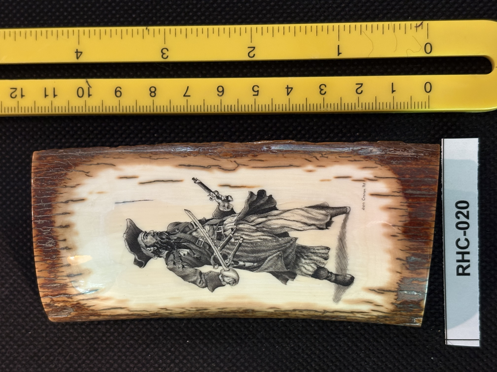
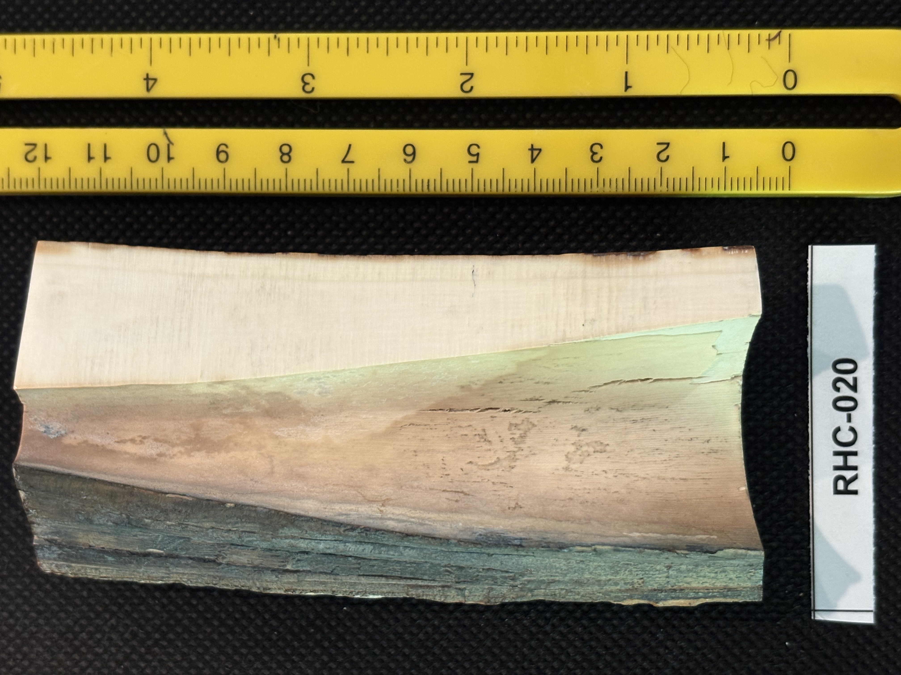
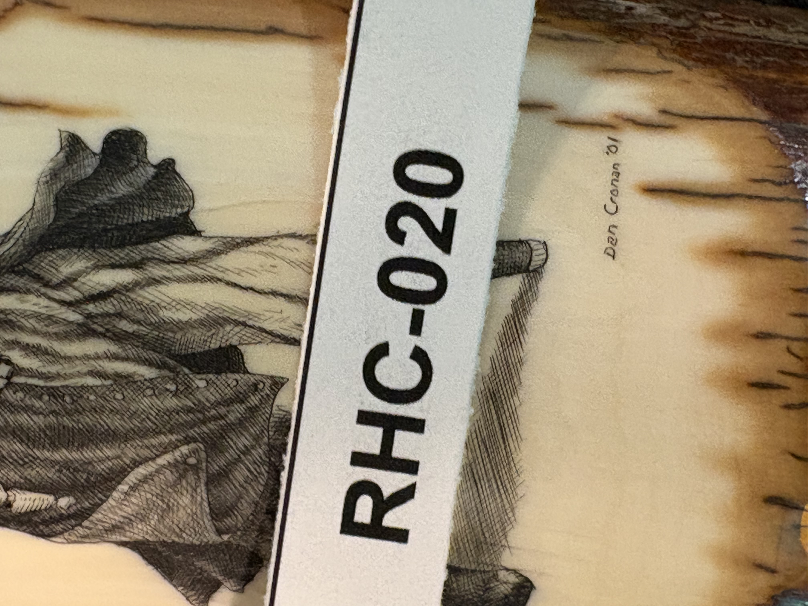

RHC-020 reviewed
Engraved Pirate Scene on Natural-Edge Slab, Signed Dan Cronan '01, on Turned Wood Base



- Object Type
- Engraved flat natural-edge slab (cross-cut panel with weathered/bark-like edges, similar format to RHC-014), mounted on a dark wood pedestal base via a short peg
- Material
- Fossil ivory (confirmed by Richard H. Cornelia); species undetermined between mammoth and walrus — check for Schreger lines (mammoth) at the top, or surface enamel width (~1/8 inch suggests walrus tusk). The reverse cross-section face's blue-green mineral staining remains a supporting (but not conclusive on its own) indicator.
- Dimensions (cm)
- length: 10.5cm, width: 4.5cm — Length (~10.5cm) and width (~4.5cm) estimated off the two cm scales shown in the photos.
- Subject Matter
- A swashbuckling pirate figure in full stride, wielding a cutlass in one hand and a flintlock pistol in the other, wearing a wide-brimmed hat and a long flowing coat/cloak billowing behind him. Rendered in black ink line work with dense cross-hatched shading, no color. A clear departure from the whaling/maritime and wildlife themes seen throughout most of the collection.
- Inscriptions
- “Dan Cronan '01”
- “Dan Cronan '01”
- Artist Attribution
- Dan Cronan
- Date / Period
- 2001 (dated in signature)
- Mount / Display Stand
- Mounted for display on a dark turned wood pedestal base via a short peg, with a small light-colored ferrule/collar at the base of the slab — same general mount family as RHC-019.
- Color / Technique
- Traditional black ink line scrimshaw engraving with dense cross-hatched shading, no color
- Condition Notes
- Surface appears glossy and intact on the engraved face; the reverse/root end shows natural mottling, cracking, and color variation (cream, tan, gray-green) consistent with a natural, unworked cross-section edge. Not physically examined.
- Distinguishing Features
- Second confirmed piece by the same artist, 'Dan Cronan,' one year after RHC-019 (2000 vs. 2001) — the clear, legible signature here retroactively confirms the tentative surname reading on RHC-019. First pirate-themed subject in the collection, distinct from the predominant whaling/nautical/wildlife themes elsewhere.
- Legal / Regulatory Status
- If confirmed fossil (mammoth) ivory as presumed, generally exempt from MMPA/ESA/CITES restrictions since it derives from an extinct species recovered from permafrost/tundra deposits, similar to RHC-014 — but state-level rules can vary. Not a confirmed lab ID; flag for legal review before any loan/sale; not a legal determination.
- Acquisition Info
- Richard H. Cornelia acquired the blank tusk separately, then commissioned Dan Cronan to engrave a pirate scene specifically because it would be highly unique — Richard has never seen a pirate scene on any other scrimshaw piece.
- Rights / Copyright
- Signed 'Dan Cronan,' dated 2001 — underlying image remains under the artist's copyright, independent of physical ownership.
- Keywords
- pirate signed Dan Cronan dated 2001 natural-edge slab wood base mount scrimshaw
- Status
- reviewed
- Date Cataloged
- 2026-07-15
Open Research Questions
Research finding (phase 3, 2026-07-15): Confirms RHC-019's finding — Dan Cronan is an actively-collected contemporary scrimshaw artist (see RHC-019 research_notes for sourcing); this piece's 2001 date sits one year after RHC-019's 2000 date, both within his documented active period. Signature format and mount style match closely enough to support both pieces being acquired together or from the same source. Per Richard H. Cornelia (written review of printed catalog booklet, 2026-07-19): "It is definitely fossil ivory, but I don't remember if it is mammoth or walrus. Look for Schreger lines (mammoth) at the top or the width of the surface enamel (walrus tusk usually shows wide enamel about 1/8 inch wide). I had acquired the tusk separately and commissioned Dan to do a pirate scene since it would be highly unique. I have never seen a pirate scene on another piece."